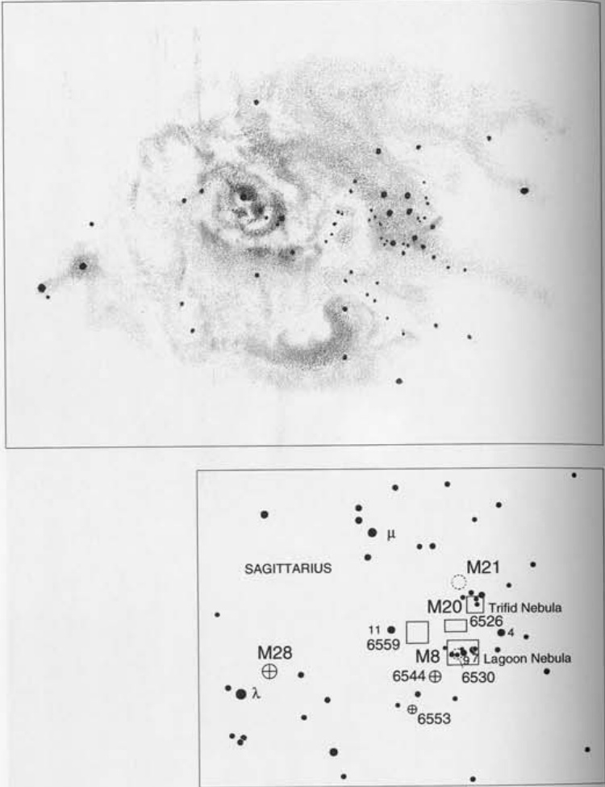

礁湖星云 · Lagoon Nebula (NGC 6523)

横亘于银河系核心方向的深邃宇宙中，一团炽热的气体与尘埃交织出宇宙最壮丽的画卷——M8礁湖星云。这片被星光照亮的星际云不仅是最易观测的星云之一，更是一座蕴藏无数恒星诞生秘密的宇宙温室。
Among the most celebrated celestial marvels visible in amateur telescopes, the Lagoon Nebula (M8) blazes like a cosmic torch in the heart of the Milky Way. This magnificent emission nebula, sprawling across 90 arcminutes of sky, represents one of the nearest and most active star-forming regions in our galaxy.
| 参数 Parameter | 值 Value |
|---|---|
| 类型 Type | 弥漫星云与疏散星团 Diffuse Nebula and Cluster |
| 星座 Constellation | 人马座 Sagittarius |
| 赤经 Right Ascension | 18h 03m.8 |
| 赤纬 Declination | -24° 23′ |
| 星等 Magnitude | 4.6；3.0（奥马拉观测值 O'Meara） |
| 角直径 Angular Size | 90′×40′（星云）; 14′（星团） |
| 距离 Distance | 5,200 光年 light years |
| 发现者 Discoverer | 约翰·弗兰斯蒂德 John Flamsteed (1680) |
历史发现与梅西耶的记录
1680年，英国天文学家约翰·弗兰斯蒂德首次记录了这个天体，将其描述为一团模糊的云雾状物质。然而，真正使其闻名于世的，是法国天文学家查尔斯·梅西耶在1764年5月23日的观测。
In 1680, English astronomer John Flamsteed first recorded this object, describing it as a misty cloud-like substance. However, it was French astronomer Charles Messier who truly brought it to astronomical fame with his observation on May 23, 1764.
梅西耶记录道："使用简易三英尺折射望远镜观测时呈星云状的恒星团，但借助精密仪器可辨其中布满暗星。"
Messier recorded: "A cluster of stars that appears to be a nebula when observed with a simple three-foot refractor; with an excellent instrument, however, one sees only a great number of faint stars."
梅西耶还注意到星云中一颗7等人马座9星，其周围环绕着极淡的光晕。这个星团呈东北-西南走向的椭圆形，恰好位于人马座弓形区与蛇夫座右足之间——这是一片中国古天文体系中"尾宿"与"箕宿"交汇的星野。
Messier also noted the 7th-magnitude star Flamsteed 9 Sagittarii within the nebula, surrounded by an extremely faint glow. The cluster appears elongated from northeast to southwest, situated between the bow of Sagittarius and the right foot of Ophiuchus.
"礁湖"之名的由来
"礁湖"一词与M8的联系可能最早出现在阿格尼斯·M·克莱克1890年出版的著作《恒星系统》中。
The word "Lagoon" was probably first used in association with M8 by Agnes M. Clerke in her 1890 work entitled "The System of the Stars."
这个诗意的名称源于星云最显著的特征——一道醒目的东西走向黑色裂隙，将星云最明亮的区域一分为二。这条暗带形如V字形水道，西侧环抱着明亮的星云岛，东侧则蜿蜒伸展着星云沙洲。
This poetic name stems from the nebula's most striking feature—a prominent dark channel running east to west, dividing the brightest regions. Shaped like a V-shaped body of darkness, it embraces a bright island of nebulosity to the west and a curved sandbar of nebulosity to the east.
若长时间仔细观测，有经验的观测者甚至能辨识出内外双重礁湖结构——内层狭窄深邃，外层宽阔浅显。
Patient observers with keen vision can even distinguish two lagoons—a deep, narrow inner one and a wider, shallower outer one.
宇宙十字弓与NGC 6530星团
在23倍放大率下，星云的复杂暗纹如同冰封花瓣坠地碎裂般纤美动人。
At 23× magnification, the nebula's intricate dark lanes resemble delicate frozen flower petals that have fallen and shattered upon the ground.
约翰·赫歇尔曾将其描述为"由星云状褶皱物质构成的集合体，其间散布着若干暗色卵圆形空隙"。
John Herschel described it as "a collection of nebulous folds and matter surrounding and including a number of dark, oval vacancies."
若在脑海中暂时抹去星云部分，您将看到由七颗亮星组成的醒目十字弓骨架。这正是M8的基本构型，在肉眼和双筒望远镜中清晰可辨。
If you mentally erase the nebulosity, you will see a crossbow of seven prominent stars—the skeleton of this Messier object. This configuration is clearly visible to the naked eye and through binoculars.
弓形结构东侧分布着NGC 6530——一个由113颗极年轻恒星组成的疏散星团。这些恒星年龄仅数百万年，几乎肯定与M8星云存在物理关联，被环状与旋涡状的星云物质紧紧包裹。
To the east lies NGC 6530—a loose sprinkling of 113 very young suns, all probably intimately associated with the M8 nebulosity that enshrouds them in loops and swirls. These stars, merely millions of years old, are cocooned within the surrounding gaseous curtains.
星云之心：赫歇尔36与沙漏星云
请务必预留充足时间研究M8星云的核心区域——它位于人马座9星西南偏西仅3角分处。
Be sure to reserve plenty of time to study the heart of M8—just 3 arcminutes west-southwest of 9 Sagittarii.
在中等放大倍数下，这片环绕赫歇尔36恒星的致密星云区呈现出独特的暗黄色或稻草色辉光，区域内两个明亮的星云结分列于赫歇尔36的东南与东北方向，西北方向则延伸出形如叉骨的暗色星尘带。
With moderate magnification, this dense region surrounding the star Herschel 36 shines with a dusky yellow or straw color. Its main features are two bright knots southeast and northeast of Herschel 36, and a "wishbone" of dark lanes to the northwest.
"这些尖端交汇于中央的明亮星云结，构成了著名的'沙漏星云'——一个曾以神秘射电辐射源著称的区域。"
"These tapered ends join in the middle to make the famed 'Hourglass Nebula'—a region once known as a mysterious source of radio emission."
NASA的哈勃空间望远镜已揭开这片神秘区域的面纱。在仅半光年尺度的范围内，星际"龙卷风"——诡异的暗色漏斗云——从新生云层中突起，如同地球上的龙卷风投影在"沙漏"内部电离气体的璀璨背景之上。
NASA's Hubble Space Telescope has revealed the secrets of this mysterious region. In an area only half a light-year across, interstellar "twisters"—eerie dark funnels—project from nascent clouds like tornadoes on Earth, silhouetted against the brilliant backdrop of ionized gas in the
🔒 受限于篇幅，本文仅展示部分样章。O'Meara 先生完整的观测手记、实测数据及未公开的独家配图，请参阅原著双语典藏版。
👉 立即在闲鱼获取《DEEP-SKY COMPANIONS》中英双语高清典藏版